BEFORE 2024
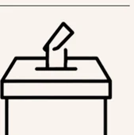
Win through unequal competitionHow democratic competition is being crushed in Türkiye
A visual report on the democratic backsliding after March 19, 2025
Prepared and published by March 19 Platform in July 2026
Democracy is not defined by voting alone. It requires free debate, lawful courts, peaceful political competition, independent institutions, free media, and the genuine possibility that power can change hands through elections.
Türkiye is a NATO ally, a G20 economy, and a strategically important country linking Europe, the Black Sea, the Middle East, and the Eastern Mediterranean. Democratic change in Türkiye therefore has consequences far beyond its borders.
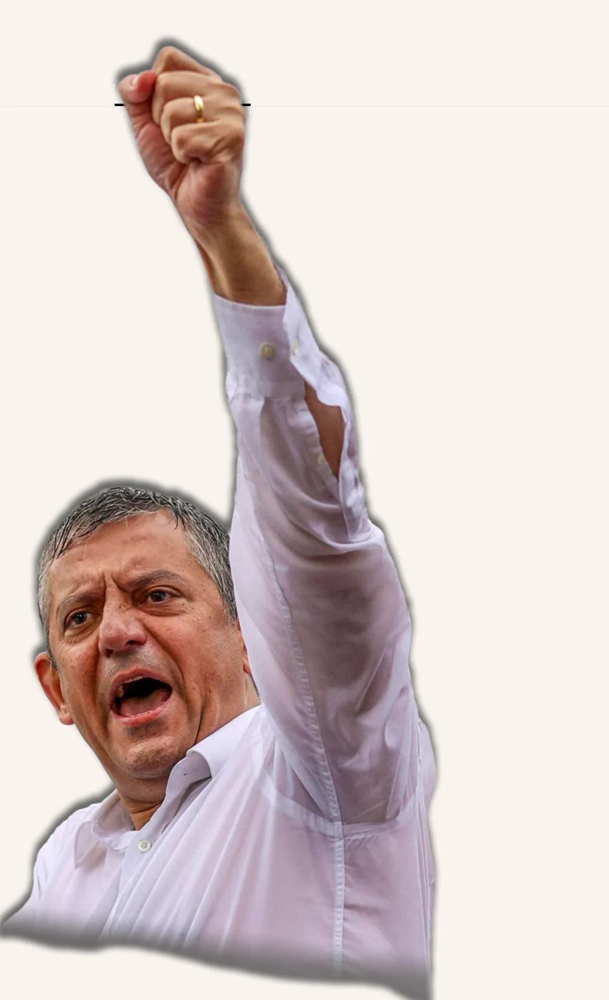
Over the past decade, democratic backsliding in Türkiye has become increasingly visible. Independent institutions have weakened, political competition has grown less equal, space for dissent has steadily narrowed. But the events that began on March 19, 2025 marked a decisive turning point on this path.
This booklet explains why. The March 19 Process was not simply about the detention of one opposition leader, but about reshaping the rules of political competition in, and ultimately the future of, Türkiye.
From authoritarian competition to a civilian coup
For years, political competition in Türkiye became increasingly unequal. State resources, media dominance, and growing pressure on opposition parties steadily tilted the playing field in favor of President Recep Tayyip Erdoğan. Yet the opposition recovered, winning the 2024 local elections and emerging as the country's largest political force.
On March 19, 2025, Istanbul Mayor Ekrem İmamoğlu (the opposition's leading presidential contender) and more than 100 politicians, municipal officials, advisers, and associates were detained. What followed extended far beyond one criminal investigation.
The March 19 Process marked a decisive turning point. Rather than merely defeating the opposition at the ballot box, it seeks to dismantle the opposition's capacity to compete at all. The emerging model resembles today's Russia, where elections still take place but no longer offer a realistic path to political change. For this reason, many in Türkiye describe March 19 as a civilian coup against democratic politics.
Erdoğan's fear of losing his power did not start in 2024. It started in 2019.
When Ekrem İmamoğlu narrowly won the election, the result was annulled in an unprecedented decision. Yet the rerun produced the opposite outcome: he won again by a much larger margin.
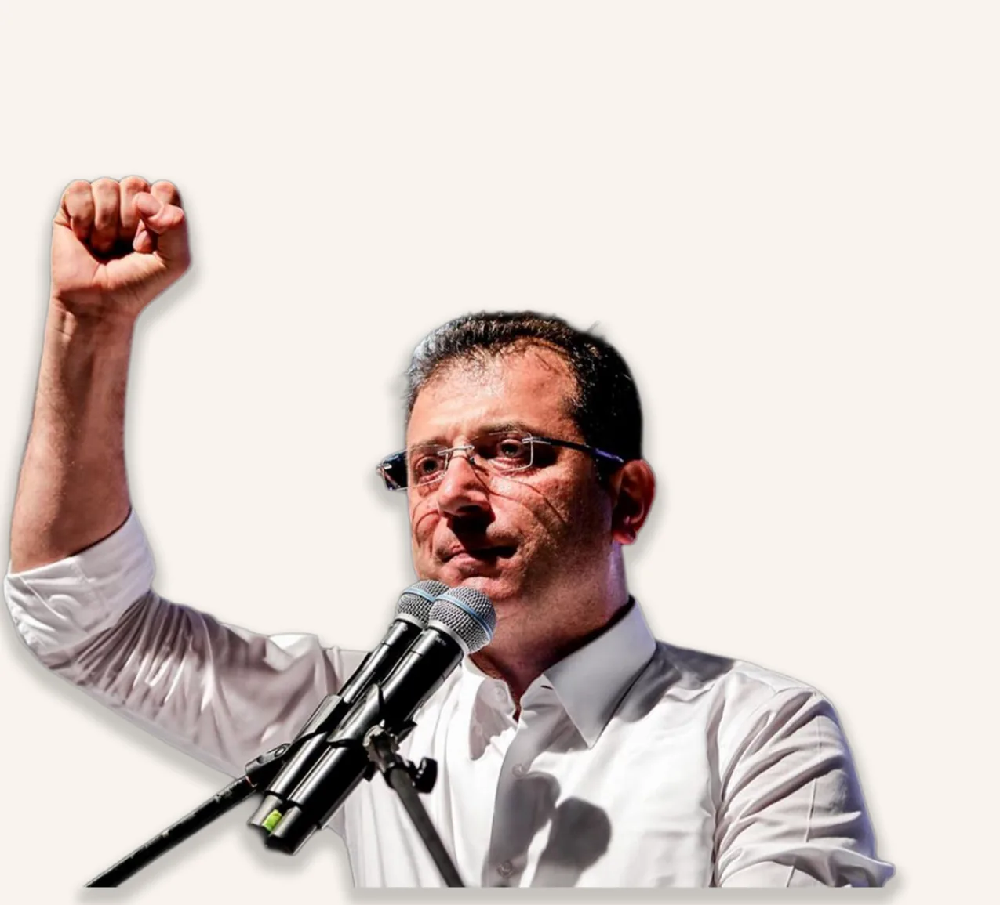
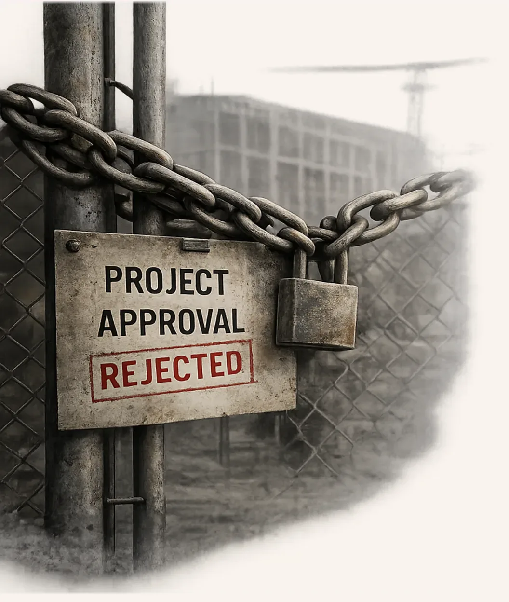
After losing Türkiye's largest cities in 2019, Erdoğan's government sought to ensure it would not happen again.
Rather than accepting the new political balance, it subjected opposition-run municipalities to years of financial, administrative, legal, and political pressure, to portray them as ineffective and incapable of governing.
Yet the strategy failed. Opposition mayors continued to deliver public services, expanded their public support, and in 2024 the CHP became Türkiye's largest political party nationwide, first time since Erdoğan took office.
Despite five years of pressure, CHP finished first nationwide.
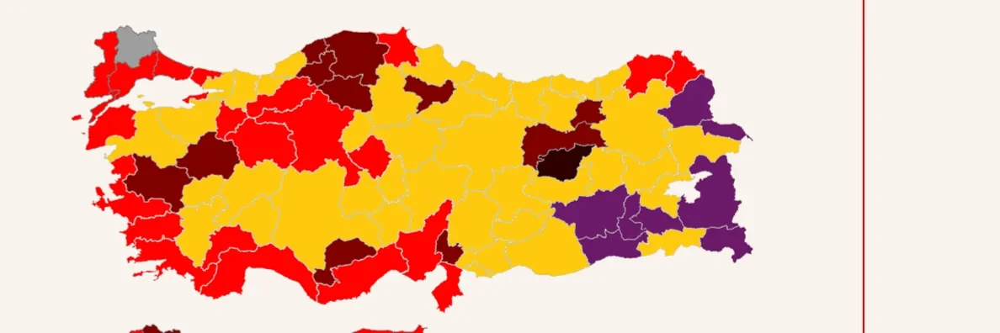
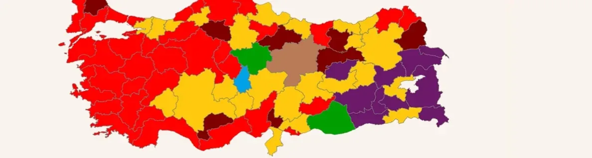
The expansion of red areas illustrates CHP's nationwide gains, while the contraction of yellow areas reflects AKP's electoral decline.
The 2024 local elections showed that sustained pressure on opposition municipalities had failed.
Instead of adjusting its policies, the government opted to escalate its strategy.
The objective shifted from defeating the opposition in elections to weakening its ability to compete at all.

Win through unequal competition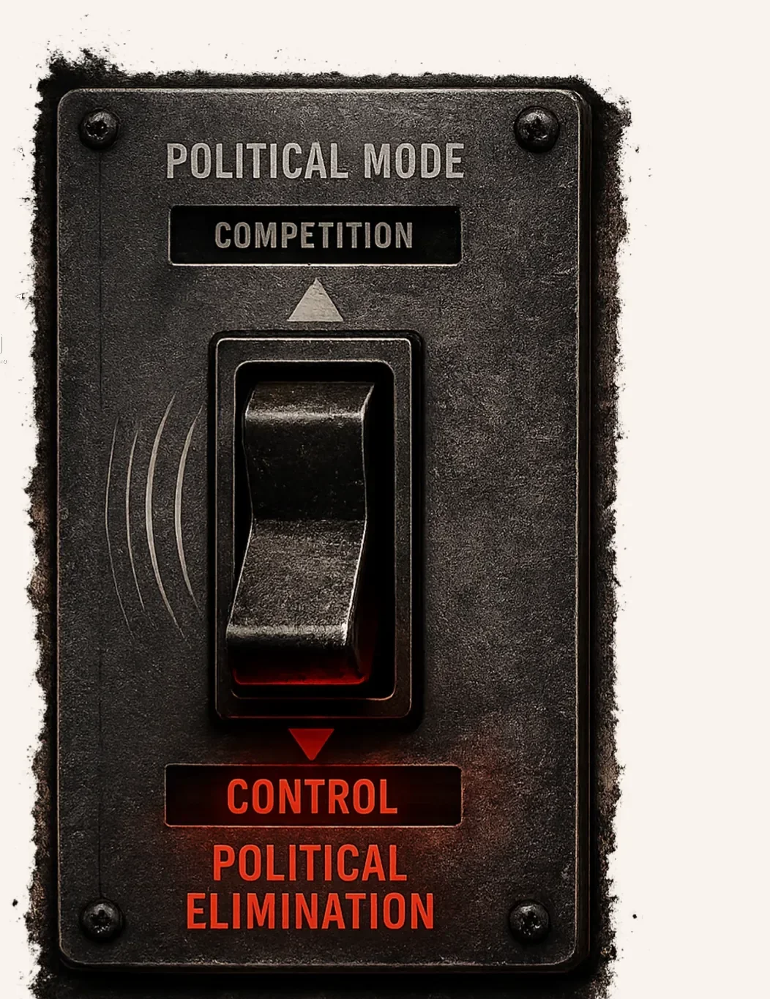
March 18–23, 2025
Within six days, Türkiye witnessed one of the most consequential political crises in its modern history. As the state escalated its intervention, millions of citizens responded through elections, protests, and public demonstrations.
15.5
MILLION people participated in the CHP presidential primary
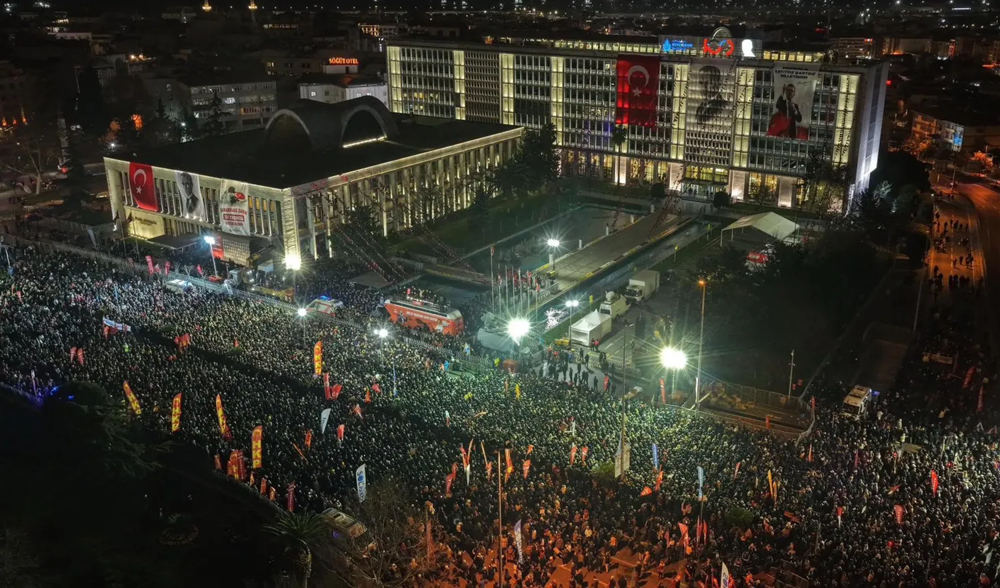
The March 19 Process did not rely on a single case. It combined dozens of investigations, overlapping prosecutions, prolonged detention, and legal uncertainty into a sustained form of political pressure.
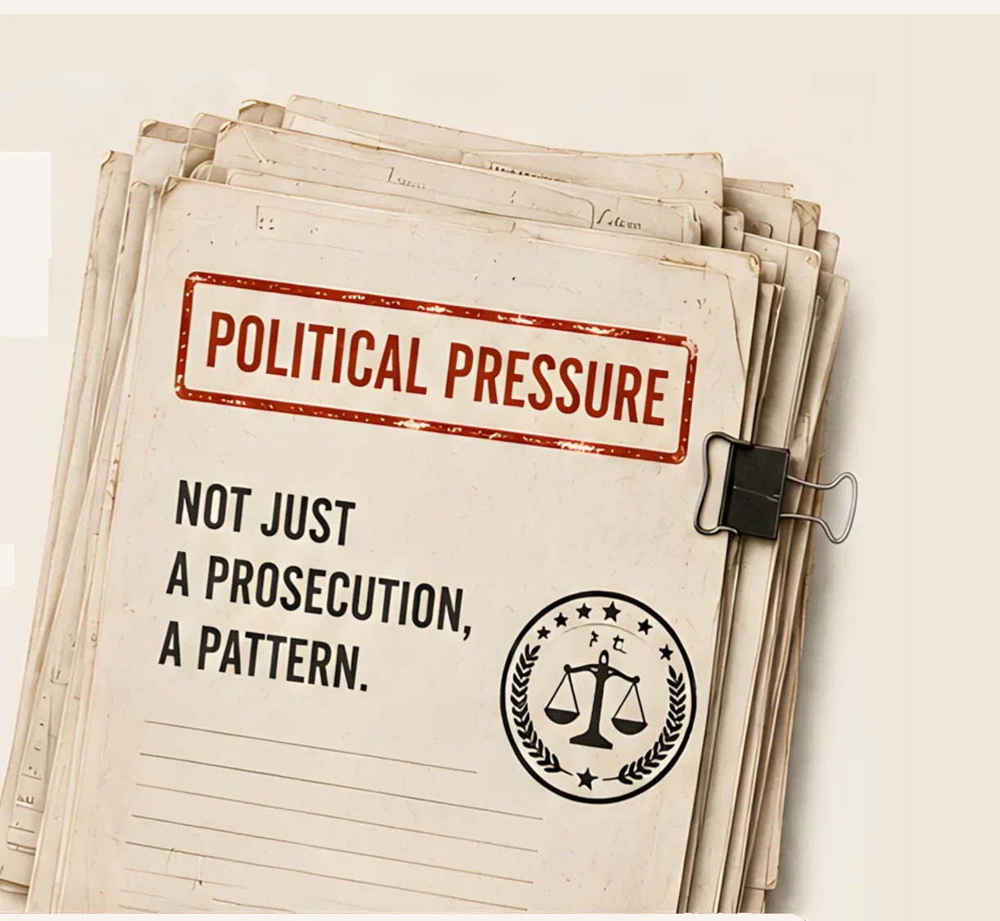
Political pressure Not justCombined prison sentences sought across dozens of cases against Ekrem İmamoğlu.
Investigations have ranged from corruption and terrorism allegations to highly technical municipal procedures, including claims about construction measurements and procurement decisions.
In December 2022, İmamoğlu was sentenced to prison and a political ban after repeating Interior Minister Süleyman Soylu's own “fool” remark back to him. The verdict remains under appeal.
Lawyers representing İmamoğlu and other officials have been subjected to searches, detentions, and investigations for their professional activities.
Operations increasingly targeted not only elected officials but also senior municipal administrators and technical staff, disrupting the day-to-day functioning of local government.
Multiple investigations were pursued simultaneously, creating continuous legal uncertainty even when earlier cases remained unresolved.
Many defendants spent extended periods in detention before indictments were finalized, while investigations often expanded faster than courts could review earlier cases.
The March 19 Process was not sustained by a single indictment. It was maintained through repeated mechanisms that prolonged uncertainty, shaped public perception, and kept pressure on political actors over time.
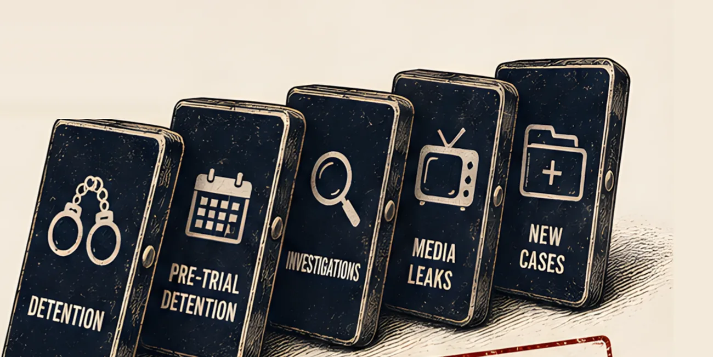
Not an isolated case.
A continuous pattern.
Some detainees reported being offered release or lighter treatment in exchange for statements implicating other suspects.
Many detainees remained imprisoned for months before indictments were completed or trials began.
Many indictments relied heavily on anonymous witnesses, hearsay, or indirect claims rather than publicly presented material evidence.
New investigations often began before earlier cases concluded, extending legal uncertainty indefinitely.
Confiscated phones, private conversations and investigation materials frequently appeared in pro-government media before being examined in court.
Rather than a single prosecution, multiple simultaneous investigations created continuous legal, political and psychological pressure.
For many detainees, imprisonment marked the beginning—not the end—of a broader process affecting their families, health, livelihoods and daily lives.
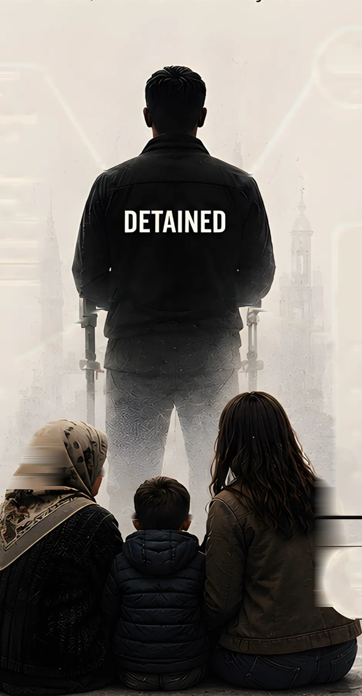
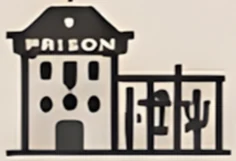
20–30 minutesbehind glassFor many families, prison visits mean a full day of travel for less than half an hour with their loved one.
Imprisonment affected far more people
than those held in custody.
Systematic practices inside prisons raise serious human rights concerns.
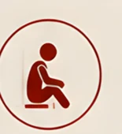
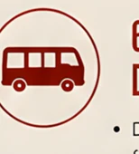
Pre-trial detention became a lived experience, not just a legal status.
These practices violate Türkiye's constitution and international human rights obligations.
Since the 2024 local elections, the Republican People's Party (CHP) has become Türkiye's largest political party, representing millions of voters across the country. Instead of seeking to regain public support through electoral competition, the government has intensified judicial and administrative pressure on the party, targeting its mayors, leadership, municipalities, and organizational structure.
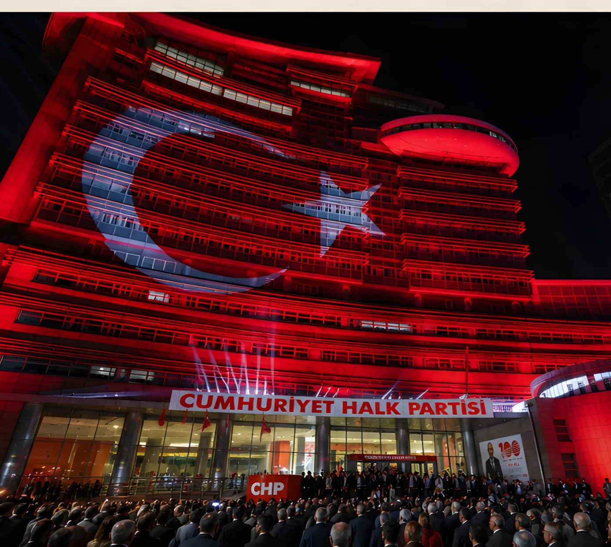
Democratic elections require real competition. But step by step,
potential opponents are removed from the field—long before election day.
From Europe to North America, international institutions and leaders have raised serious concerns about democratic backsliding in Türkiye.
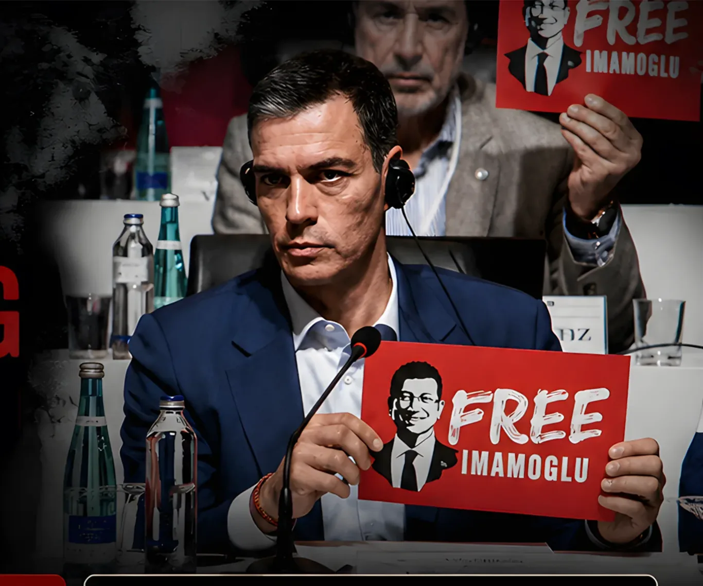
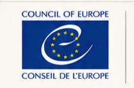
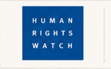
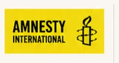
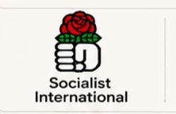
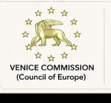
These are not isolated opinions. They come from institutions that monitor democracy, human rights and the rule of law across the world.
Repeated and consistent concerns from international actors strengthen calls for accountability and action.
Democratic backsliding in a NATO member and key regional actor has wider implications for Europe, security and global democratic norms.
Silence in the face of democratic erosion elsewhere undermines the credibility of the rules-based international order for everyone.
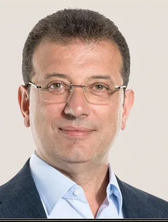
Ekrem İmamoğluTurkish Opposition Leader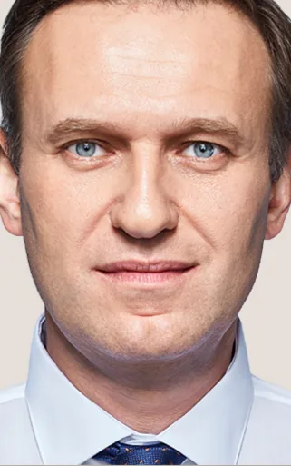
Alexei NavalnyRussian Opposition LeaderTürkiye's democratic trajectory affects not only its own citizens, but regional security, international alliances and the rules-based international order.
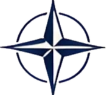
When a strong country moves away from competitive democracy toward authoritarianism, the consequences can spiral far beyond its borders. We have seen this in Russia.
The warning is clear: when elections remain while meaningful competition is dismantled, democratic decline can become harder to reverse.
Preventing Türkiye from moving further down this path requires international attention, solidarity and principled engagement—before today's warning signs become tomorrow's reality.
Democracy requires
more than elections
It requires independent institutions, genuine political competition and the rule of law.
It also requires international solidarity.
Read the updated digital version with sources
@March19Platform